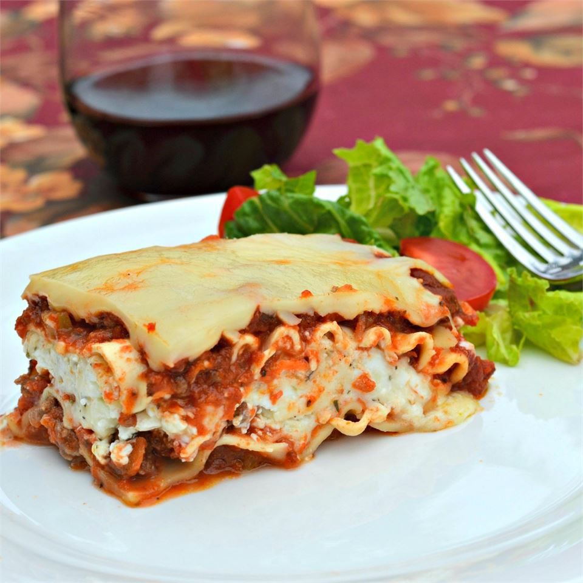

Home
lasagna

This lasagna, made with ground beef and whole wheat noodles, is a
comforting and nutritious dish that’s sure to satisfy the whole family.
Packed with flavor and a healthier twist, it’s perfect for any occasion.
Ingredients
- 12 whole wheat lasagna noodles
- 1 pound lean ground beef
- 2 cloves garlic, chopped
- 1 teaspoon dried oregano, or to taste
- ½ teaspoon garlic powder
- salt and ground black pepper to taste
- 1 (16 ounce) package cottage cheese
- ½ cup shredded Parmesan cheese
- 2 eggs
- 4½ cups tomato-basil pasta sauce
- 2 cups shredded mozzarella cheese
Steps
- Preheat the oven to 350 degrees F (175 degrees C).
-
Boil salted water, cook lasagna noodles for 10 minutes or until al
dente, then drain.
-
Cook ground beef, garlic, oregano, garlic powder, salt, and pepper in a
skillet over medium heat until browned, about 10 minutes.
-
Mix cottage cheese, Parmesan cheese, and eggs together in a large bowl
until thoroughly combined.
-
Layer 4 noodles, sauce, beef mixture, and cottage cheese in a 9x13-inch
pan. Repeat twice, ending with sauce, then top with mozzarella. Cover
with foil.
-
Bake at 350°F for 30 minutes until bubbly. Remove foil and bake 10 more
minutes until cheese browns. Let stand 10 minutes before serving.